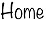
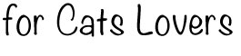
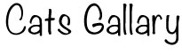
あなたがねこに愛されているサイン
〜我が家のねこと共に〜
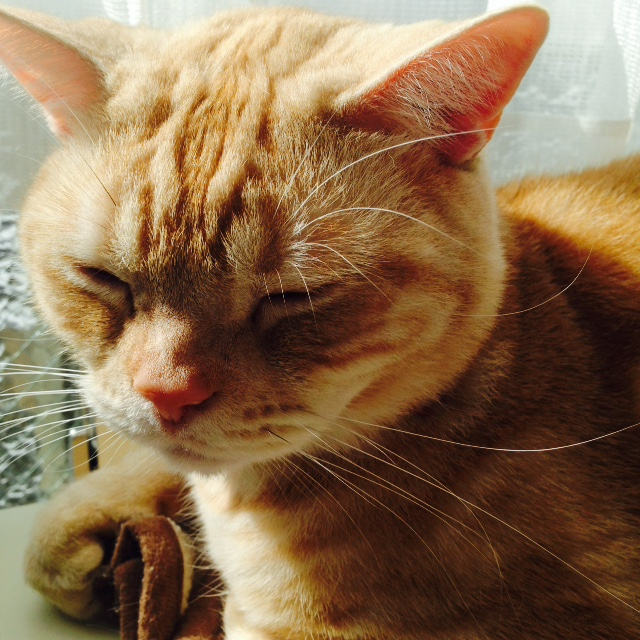
ゆっくりとまばたきをする
ネコが見知らぬ人や他のネコに遭遇する場合、
まばたきせずにじっと相手を見つめます。
逆にそのネコがあなたを見て、じっと凝視せずに
ゆっくりとまばたきしたりするのは満足と愛情の表れです。自分のネコに対して同様の仕草をして、どれぐらい長い間、この「ゆっくりまばたき」をお互いにしていられるのかという時間によって愛情の程度がわかります。
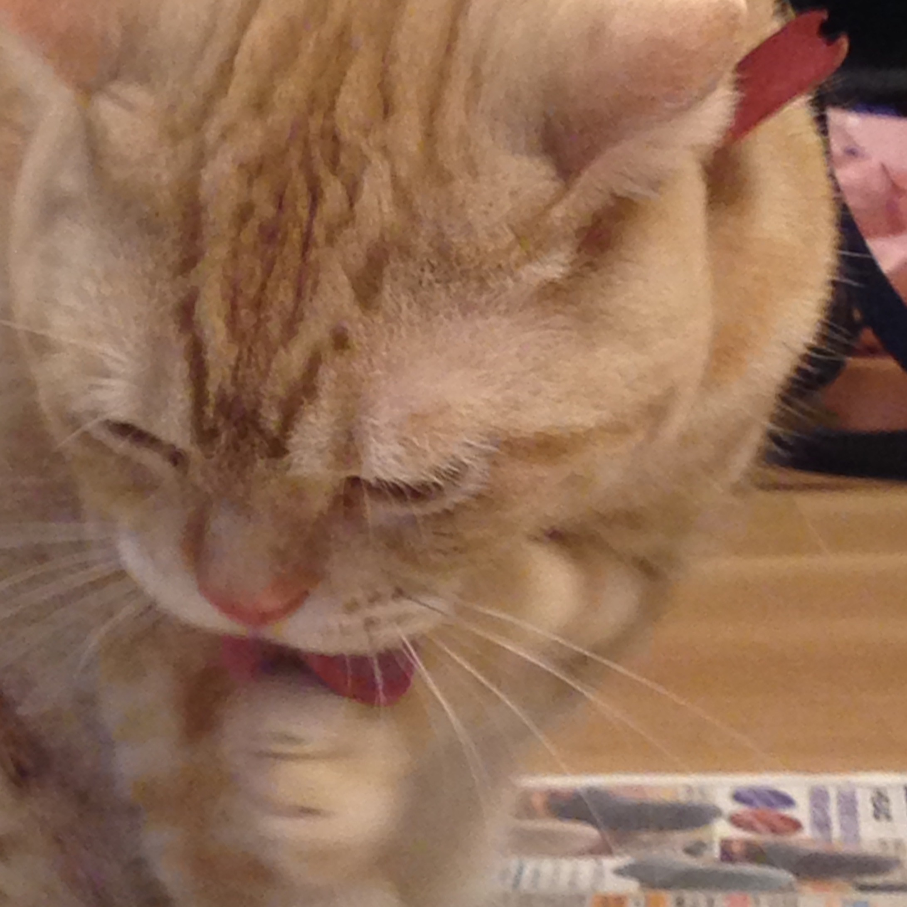
グルーミング(身繕い)
グルーミングのすべてが
衛生的な理由による行動ではなく、
ネコにとってはストレス緩和の意味もあります。そしてネコがあなたをグルーミングしてくれる場合、それはネコがあなたを家族の一員として認めているという何よりのサインでもあります。
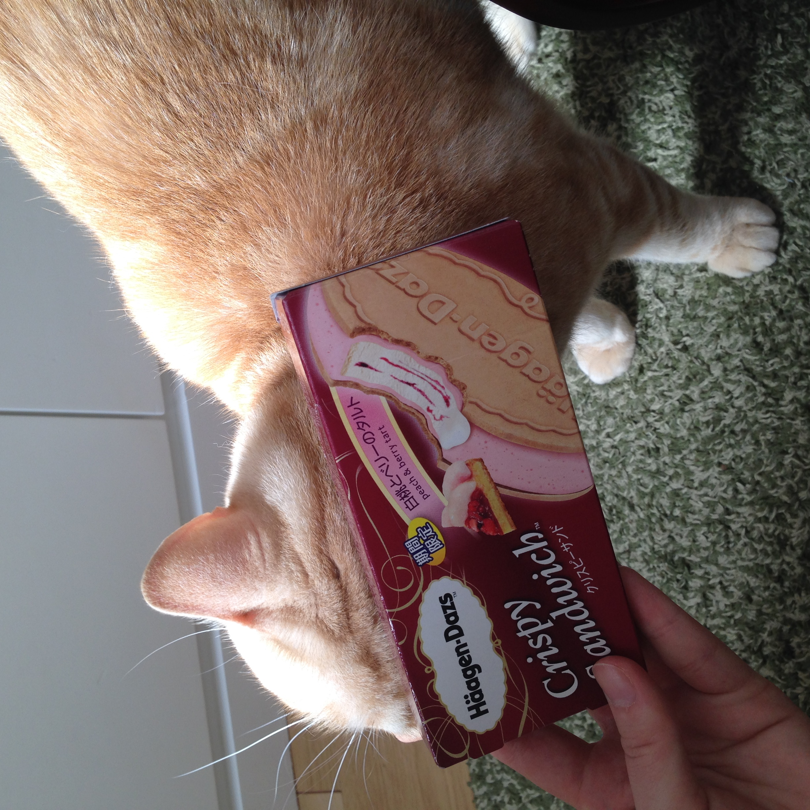
頭をこすりつけてくる
ネコがもしあなたの近くに寄ってきて、
あなたの体のどこかに頭をこすりつけてくる場合、それは「マーキング」です。このマーキング行為自体、フェロモンを分泌するということが
心地よいという事と親しみを示しており、
ネコにあなたがマーキングされたということは「この人は私のもの！」
という主張をしているという意味になります。
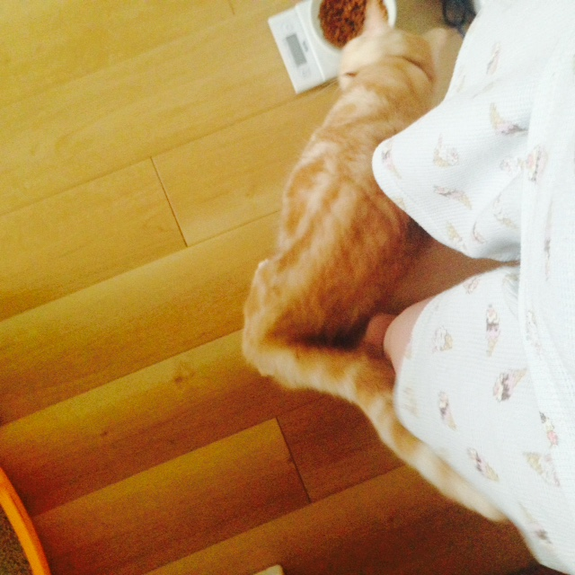
すぐ近くを歩く
あなたの猫が部屋から部屋へあなたが歩いて移動するとそのあとから続いてついてきて、あなたがいるところならどこでもぶらぶらしている場合、それはそのネコがあなたに興味を持っていて、
あなたのいるところにいたいというサインです。
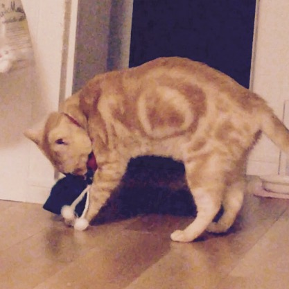
「贈り物」をもってくる
ネコが虫や鳥、ネズミの死骸を家の前や
部屋の前、あるいはあなたの足下に持ってきて
ポトンと置いていき、あなたを驚かせることが
ありますが、これはいやがらせではなくむしろ逆、あなたに大事な「贈り物」を届けているわけです。ちょうど子どもが両親から承認を求めるように、あなたがその贈り物によって満足することをネコは望んでいるということです。
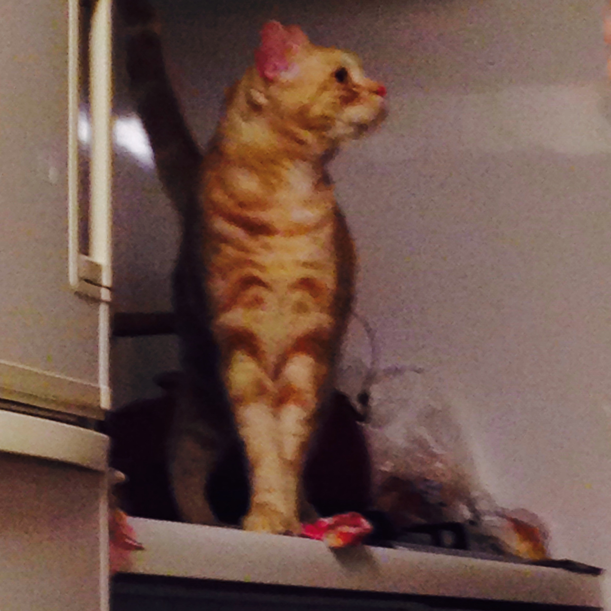
帰宅と同時に興奮し始める
場合によっては飼い主が目撃できていないケースもありますが、家族や同居している人、あるいは友人が知っているケースがあるのがコレです。
例えばあなたが自動車で戻ってきた場合、
自動車のドアを開ける音、ロックを解除する音、
あるいはそれに準じるような「あなたが家に帰ってきた」ことを知らせる音を聞いたとき、
ほとんどのネコは興奮状態に陥ります。
もしあなたが帰宅したときにネコが玄関にいる場合、それはあなたが無事に家に戻ってきたことによってネコがほっとしている証拠です。
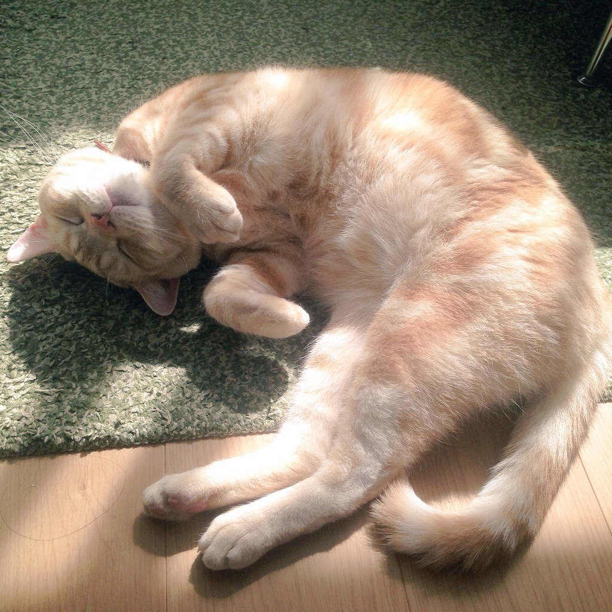
おなかをみせる
ネコがあなたの前で寝転がって仰向けになり、
おなかを見せる場合、それは「あなたを信頼し
あなたを愛している」という合図です。
というのも、ネコにとっておなかを相手に晒す
というのは、内臓の詰まったネコの弱点を
晒しているということになるためです。
つまりおなかを見せてくれるネコはあなたを警戒していない、という意味になります。
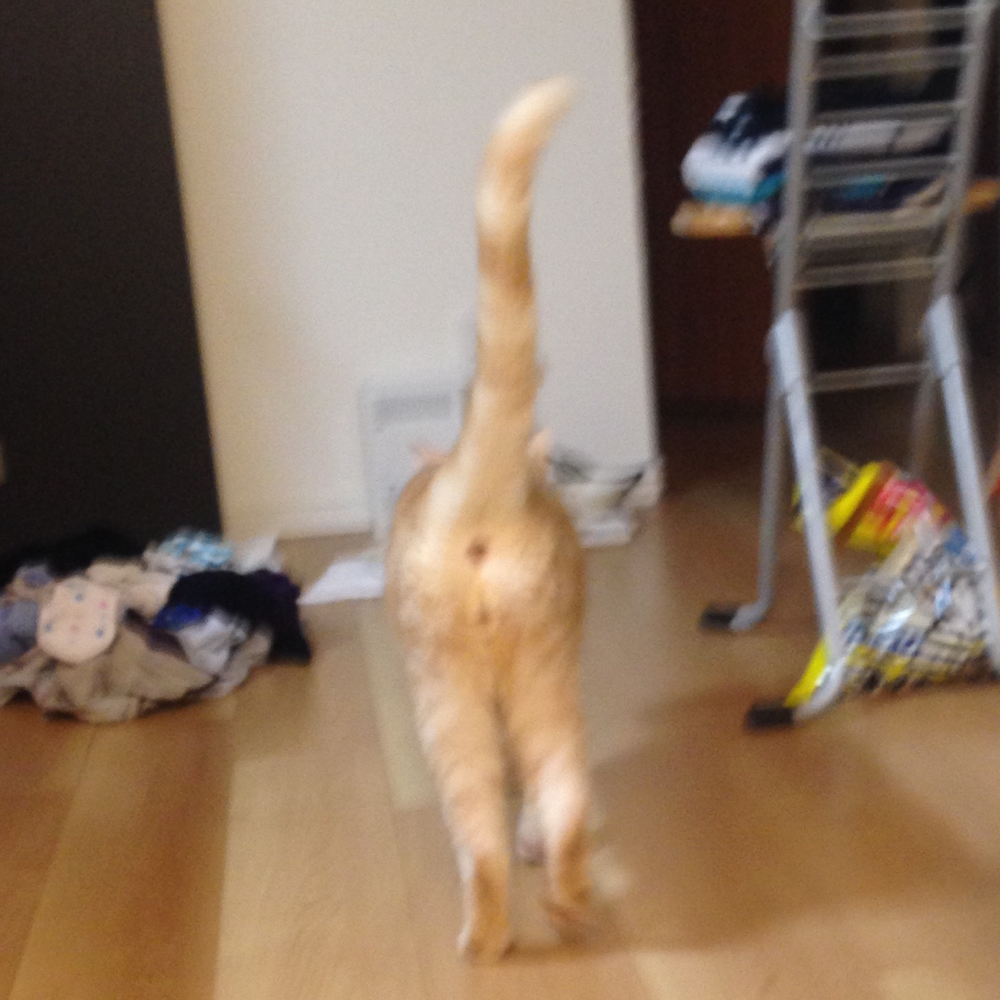
しっぽのかたち
多くのネコはあなたに挨拶するためにしっぽを
クエスチョンマークのような曲がった形にします。そしてしっぽが直立位置になればなるほど、それは親しさ・信頼・愛情の強さを示します。
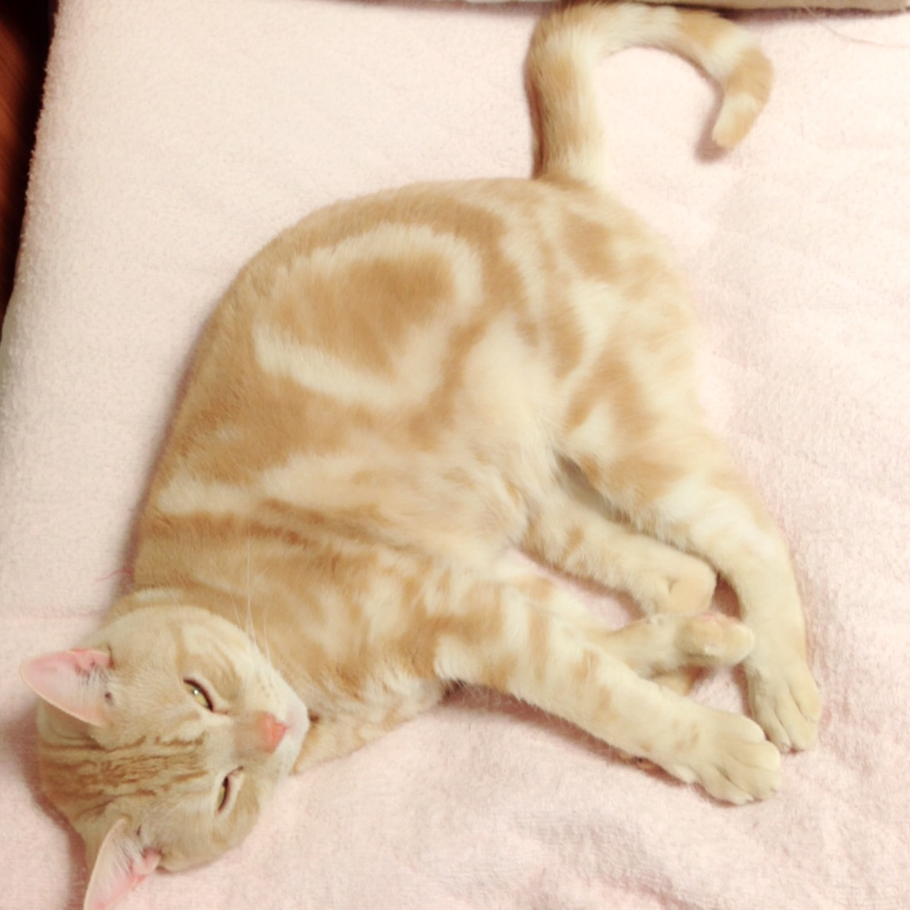
もみもみ
猫は本能的に生まれたときから母親ネコのミルクを出すのを促進するために、相手のおなかをもみもみします。そしてこのもみもみ行為をもしもあなたがされたなら、それはあなたのネコがあなたにできる最も大きな愛情表現のうちの1つです！
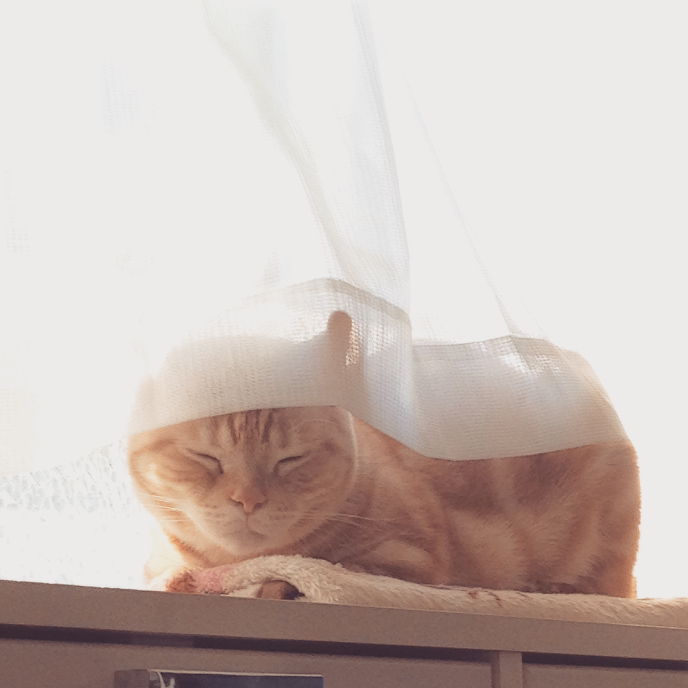
反応がかすかになる
ネコは犬と違い、
あなたのことが大好きだからといって
ハァハァと興奮してあなたをなめ回そうとしたりしませんし、むしろそっけない態度を取ります。
しかしそれはあなたを愛していないのではなく、
ネコ独特の繊細な方法であなたの位置を
あなたに教えており、
あなたの膝の上に乗ってごろごろと音を鳴らす
というのが何よりの愛情表現です。
http://gigazine.net/news/20100806_how_cats_display_affection/